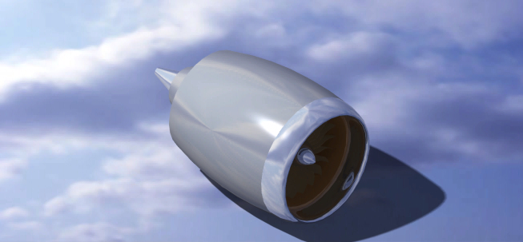
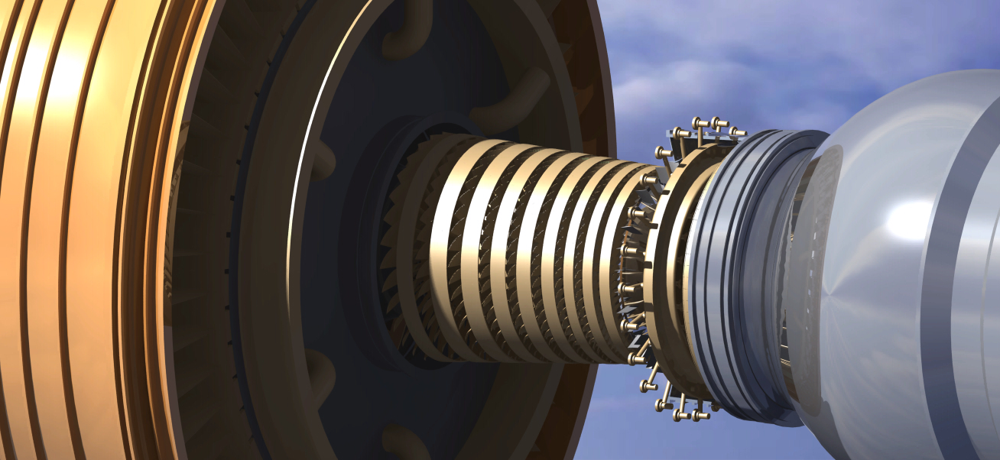
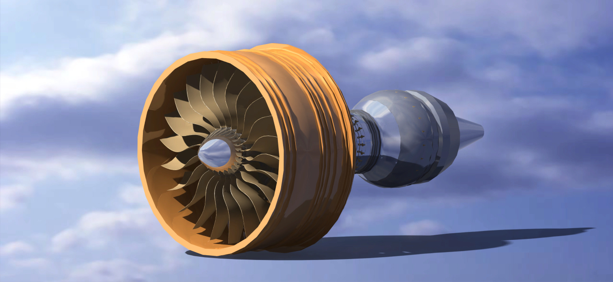
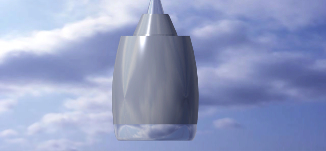
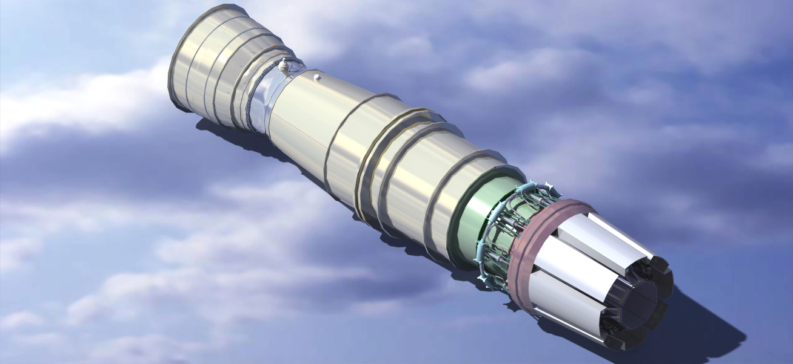
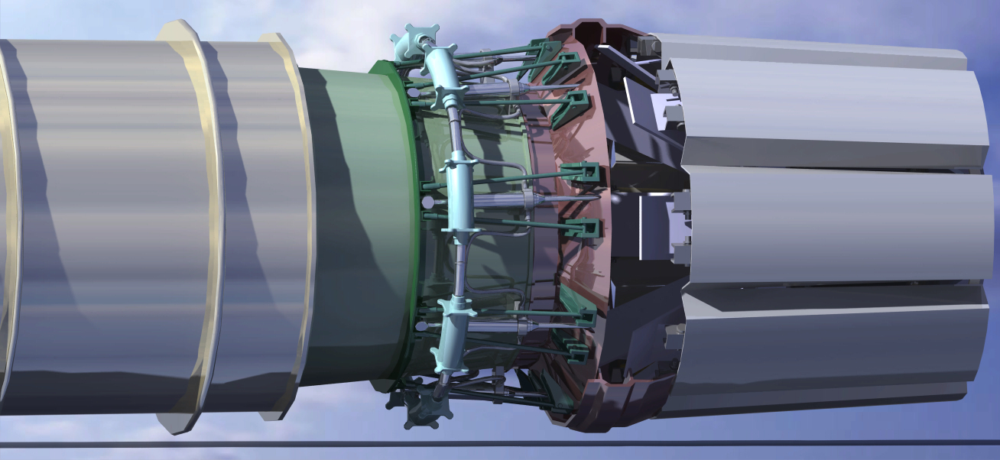
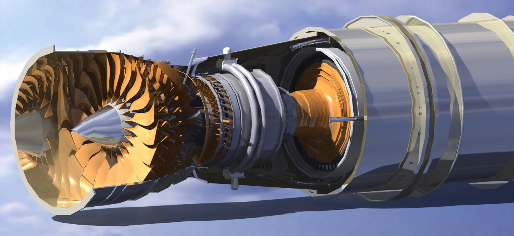
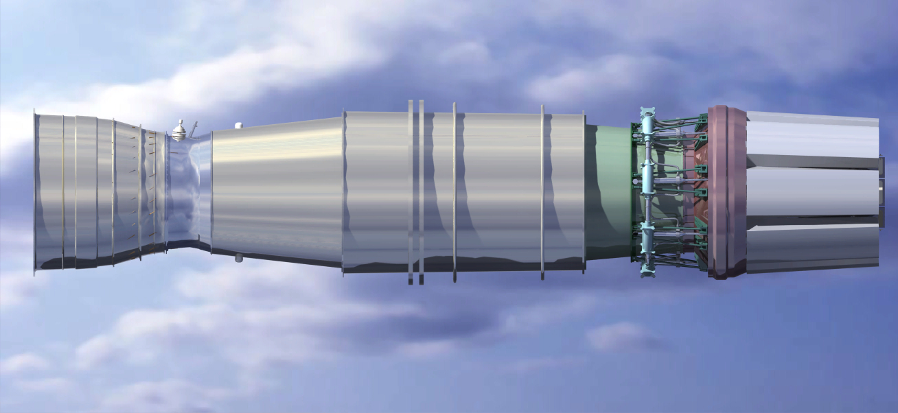
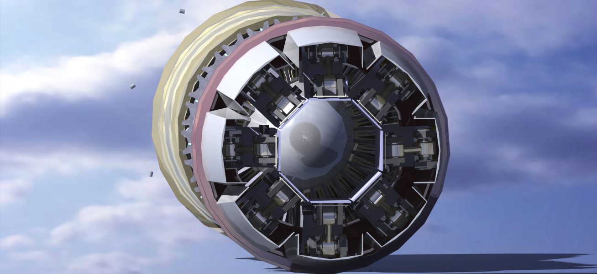

Turbofan modeling in CATIA V5
Remote CAD internship building detailed part and assembly models of the GE90 and Eurojet EJ200 turbofan engines from engineering drawings and reference material, presented during technical review sessions.
GE90 turbofan
Full assembly model built from reference geometry, covering the fan stage, spinner and nacelle inlet/exhaust surfaces.




Eurojet EJ200 turbofan
CATIA V5 part and assembly model of the EJ200 military turbofan — the Eurofighter Typhoon engine — built alongside the GE90 model during the Dwello Aerospace internship, including a fan-stage cutaway to show the internal core.





Side quests · Miscellaneous projects in FreeCAD
Bike brace (two-bore split clamp)
Bike brace (two-bore split clamp)
A bicycle clamp bracket that holds two tubes at right angles to each other, modelled in FreeCAD from a dimensioned drawing. One end has a 28 mm bore (R14) that grips a tube vertically, and the other has a 23 mm bore (R11.5) set horizontally for a handlebar-sized tube. Each bore is split by a slot and closed with pinch bolts. Parts like this are used to mount accessories, lights or extension bars, or to link frame and handlebar tubes. The envelope is about 103 mm long, 50 mm tall and 44 mm wide, with a pocket through the body to save weight.
Parametric rebuild: the key dimensions live in a FreeCAD spreadsheet with aliases such as bore_large_d, bore_small_d, length, height and width, plus slot width, bolt size and spacing, and wall thickness. A PartDesign body references them in constrained sketches that are padded, pocketed and filleted, with the bolt holes made as hole features. Changing a spreadsheet value rebuilds the whole part, so it adapts easily to other tube diameters.
Fabrication: CNC machined from 6061-T6 aluminium billet, with the slots cut by milling or wire EDM and the bores finished by reaming, then anodised. Socket-head steel bolts do the clamping. A 3D-printed PETG or nylon prototype is useful for checking fit before cutting metal.


2D drawing
Dimensioned orthographic drawing the model was built from (dimensions in mm).